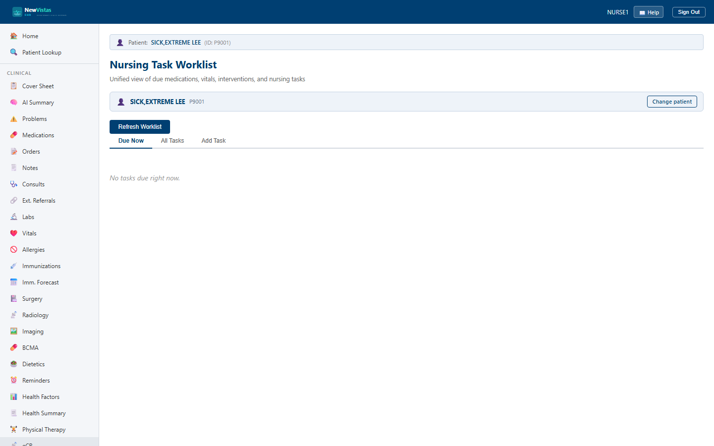

Task Worklist
See everything due for a patient in one place — due medications, vitals, interventions, and ad-hoc nursing tasks — pulled together into a single prioritized worklist. Mark tasks done or defer them, and add your own one-off tasks as needed.
Open the Task Worklist screen
- Go to
/nursing-tasks. - In the Patient Bar at the top, enter the patient ID and click Load.
- Click Refresh Worklist to regenerate the due items. The Due Now tab opens; if it's empty it reads "No tasks due right now."

What you see
Three tabs run across the top: Due Now, All Tasks, and Add Task.
Due Now & All Tasks tabs
- One row per task, with columns for Priority, Category, Description, Due, Status, and Actions.
- Due Now shows only tasks that are Due or Overdue; All Tasks shows every task on the worklist.
- Rows are shaded by priority — red for STAT, amber for Urgent — so the most pressing tasks stand out.
- For Due or Overdue tasks, the Actions column shows Done and Defer buttons.
- A "Last refreshed" timestamp appears under the table.
Add Task tab
- Category — Vital Signs, Assessment, Wound Care, Patient Education, Discharge, or Other.
- Priority — Routine, Urgent, or STAT.
- Description of the task.
- Click Add Task to put the ad-hoc task on the worklist.
Refresh regenerates the worklist
The worklist is built from the patient's due medications, vitals, and
interventions at the moment you generate it. Click Refresh
Worklist at the start of your shift and after acting on a batch of
tasks to keep the Due Now list current.
Done vs. Defer
Use Done when a task is complete and Defer when it
needs to slip to later — deferring keeps it on the record rather than
dropping it, so nothing falls through the cracks at handoff.